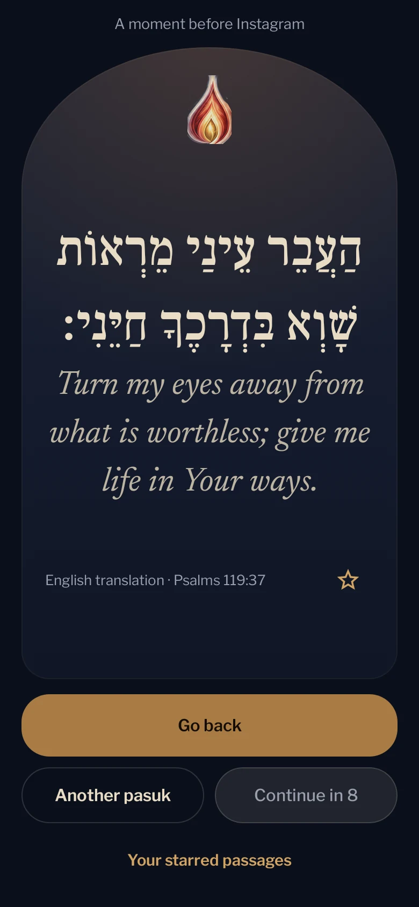

Torah before the app opens
Open an app you picked, and a passage of Torah appears first. Go back, read another passage, or wait a few seconds and continue.
- The wait is 3, 5, 8 or 10 seconds. You choose.
- Continuing opens the app for 15 minutes by day, or 5 at night (10 PM to 6 AM). You can change both, and the hours.
- Longer passages scroll verse by verse.
- When the time is up, a passage comes back.